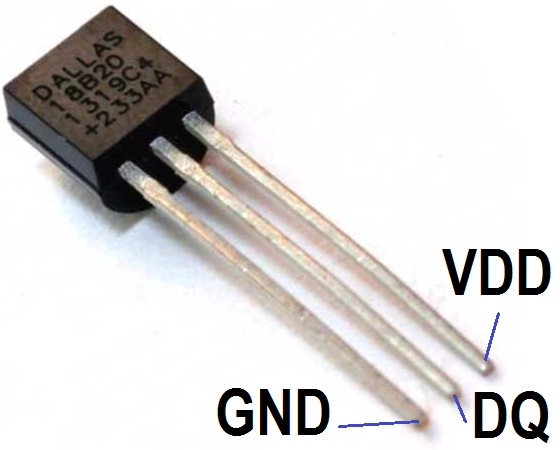
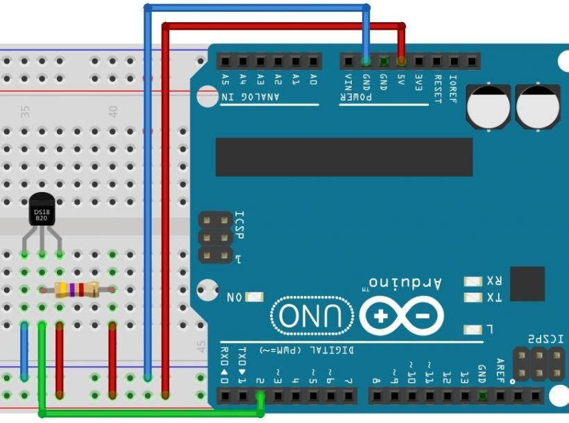

Датчик температуры DS18B20
Датчик температуры DS18B20 - это цифровой измеритель температуры, с разрешением преобразования 9 - 12 разрядов и функцией тревожного сигнала контроля за температурой. Параметры контроля могут быть заданы пользователем и сохранены в энергонезависимой памяти датчика.
DS18B20 обменивается данными с микроконтроллером по однопроводной линии связи, используя протокол интерфейса 1-Wire.
Питание датчик может получать непосредственно от линии данных, без использования внешнего источника. В этом режиме питание датчика происходит от энергии, запасенной на паразитной емкости.
Диапазон измерения температуры составляет от -55 до +125°C. Для диапазона от -10 до +85°C погрешность не превышает 0,5°C.
У каждой микросхемы DS18B20 есть уникальный серийный код длиной 64 разряда, который позволяет нескольким датчикам подключаться на одну общую линию связи. Т.е. через один порт микроконтроллера можно обмениваться данными с несколькими датчиками, распределенными на значительном расстоянии. Режим крайне удобен для использования в системах экологического контроля, мониторинга температуры в зданиях, узлах оборудования.

Основные характеристики:
- Диапазон: -55...+125°C.
- Точность: 0,5°C.
- Разрешение: 9.. 12 бит (0,48.. 0,06°C).
- Питание: 3...5,5 В.
- Период выдачи результата:
- 750 мс при точности 12 бит.
- 94 мс при точности 9 бит.
- Интерфейс связи: 1-Wire (OneWire).
- Корпус: TO-92, SOIC-8 или герметичное исполнение.
Таблица 1
| Вывод | Описание |
|---|---|
| GND | Обший провод (-) |
| DQ | Вывод сигнала данных (входа/выход). Выход типа открытый коллектор интерфейса 1-Wire. Также через него происходит питание в режиме ”паразитное питание”. |
| VDD | Вывод внешнего питания (+). В режиме ”паразитного питания" должен быть подключен к земле. |
Датчик подключается к любому цифровому пину Arduino, но пин должен быть подтянут к питанию резистором 4,7 кОм. На один пин можно подключить несколько датчиков DS18B20.
Для написания программ понадобиться библиотека OneWire.

Источники
mypractic.ru - DS18B20 – датчик температуры с интерфейсом 1-Wire. Описание на русском языке.
alexgyver.ru - Arduino и термометр DS18B20
3d-diy.ru - Цифровой датчик температуры DS18B20
portal-pk.ru - Урок 10 - Датчик температуры DS18B20, подключаем к Arduino.